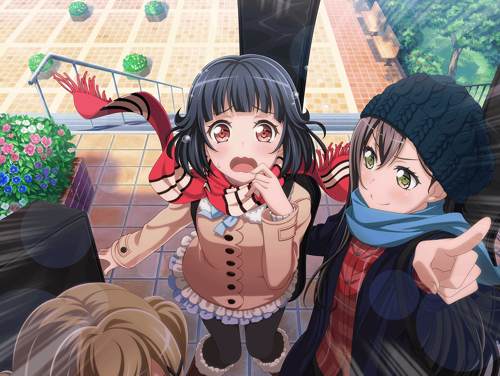
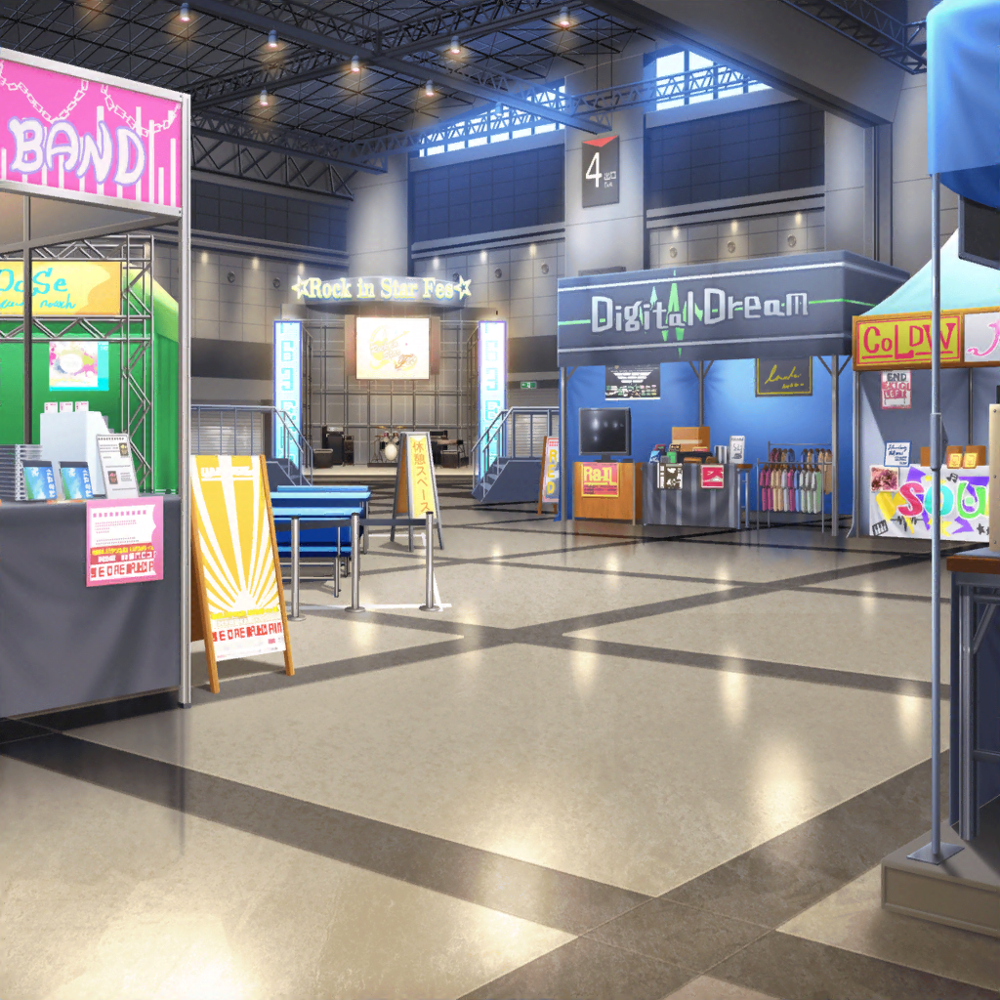

イベント 午後の部
イベント会場
りみ
あ、あの……
このチラシ……良かったら……っ！
りみ
（あ……また行っちゃった……）
りみ
……はぁ。
なかなかうまくいかないな……
沙綾
どうしたの、りみりん？
そんなため息なんかついて
りみ
あ、沙綾ちゃん……
なんか私も香澄ちゃんみたいに、他のブースの人達と
コミュニケーションを取ろうと思ってるんだけど……
沙綾
なかなか、うまくいかない感じ？
りみ
う、うん……
沙綾
確かに、香澄はその辺本当にすごいもんね。
さっきも外国の人と仲良くなったらしくって、
身振り手振りでかなり盛り上がってたよ……
りみ
た、確か香澄ちゃんって……
英語の補習、受けてたよね……？
香澄
あー！ りみりん！ さーや！
どうしたのこんなところで、じっとして！
もっといろんなブース行ったほうがいいよ！
香澄
もうね！
みんなホント面白い人ばっかりだもん！
いろんな話が聞けて、本当に勉強になるよ！
りみ
……あ、あのさ、香澄ちゃん！
１つ聞いてもいい？
香澄
うん！ いいよ！
なになに？ なんでも聞いて！
りみ
ど、どうやったら……
初対面の人とそんなに仲良くなれるのかなって？
何か秘訣みたいなのって……あるの？
香澄
秘訣？
秘訣ねぇ……秘訣、秘訣、秘訣……
沙綾
秘訣かどうかはわからないけど、
香澄を見てると、とにかくたくさん質問をしてるよね？
香澄
あ！ それはあるかも！
香澄
ていうか、とにかく聞きたいことがたくさんあるから、
それは全部聞いてるかも！
沙綾
なんていうか香澄って、
好奇心のかたまりみたいなところあるもんね？
沙綾
香澄が質問をしてるうちに、
自然と会話が弾んでくる、みたいな感じなのかも
香澄
さっすがさーや！
私のこと、わかってくれてるねー！
りみ
なるほど、質問か～……
香澄
あ！ それじゃあさ、りみりんも１回やってみようよ！
香澄
私が初対面の人の役をやるから、
りみりんが私に話しかけてみて！
りみ
え、えっと……
わかった。
とにかく質問をすればいいんだよね？
香澄
そうそう！
それじゃあ、やってみようっ！
りみ
……え、えっと、うん！
そ、そうしたら……
りみ
……あ、あの、すみません！
きょ、今日はどちらから来たんですか？
香澄
私ですか！？
どこだと思いますっ？
りみ
…………えっ？
えっと……それは……
香澄
ヒントはねぇ～……
沙綾
ちょ、ちょっと香澄、タイム！
香澄
え？ な、なになに？ どうしたの？
沙綾
りみりんの練習なんだから、香澄が質問を返しちゃったら
練習にならないし……
香澄
あ！ そっか！ ご、ごめんりみりん！
もう１回！ もう１回、初めっからやりなおそう！
りみ
う、うん……
なんか、ごめんね……
香澄
それじゃあ、気を取り直して……
よーい、スタート！
りみ
こ、こんにちは……
あ、あの、１番好きな楽器って、なんですか？
香澄
えっと、それはやっぱりギターです！
りみ
あ、あのそれで……
香澄
ギターって、すごいと思いません！？
だって、たった６本の弦で、あんなにいろんな音が出るし、
それに何より持っててカッコイイでしょ？
香澄
カッコイイと思いますよね？
りみ
あ、は、はい……
香澄
ですよねー！
あ、ひょっとしてあなたもギターをやってます？
香澄
もしそうだったら、今度一緒にセッションしてみません？
絶対に楽しいと思うんですけど！
ね！？ 絶対、やりましょうよ～！
沙綾
……あ、あははは。
なんかさすがって感じだね……
りみ
こ、これじゃあ当分、
香澄ちゃんみたいにはなれないかもな……
沙綾
けど……
りみりんにはりみりんの良さがあるんだから、心配ないって
りみ
あ、ありがとう、沙綾ちゃん……
もっともっと、修行しないと、ね……